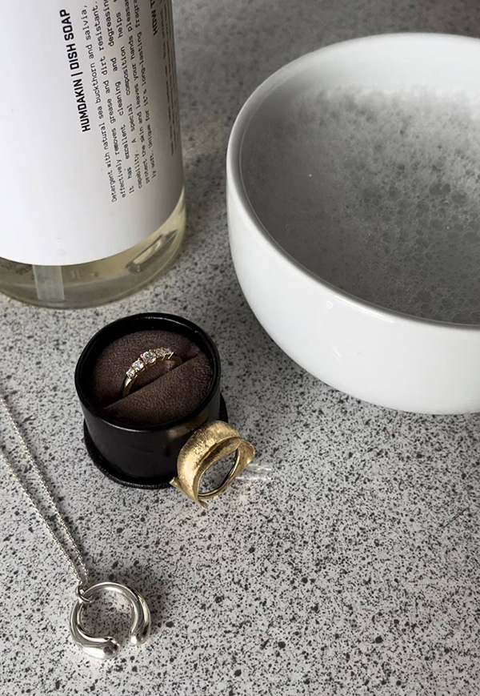

Sådan plejer du nemt dine smykker derhjemme.
Smykker er den vigtigste accessories til at fuldfører outfittet, og derfor er det vigtigt at holde dem smukke.
Men vidste du at du faktisk også kan forlænge smykkets levetid, hvis du passer godt på dem?
Herunder guider vi dig igennem rengøring af de forskellige materialer, ædelsten og perler.

Guldsmykker
Dine guldsmykker kan du nemt rengøre derhjemme du skal blot bruge en skål, opvaskemiddel og lunkent vand. Denne rengøring kan både bruges til, rødguld, hvidguld og rosaguld.
Sådan gør du:
Fyld en skål med lunkent vand.
Put 1-2 dråber opvaskemiddel i.
Lad det ligge i 15 minutter.
Tør det med et rent viskestykke.
Hvis det ikke er nok, kan du derefter bruge en pudseserviet.
Tip:
1. Hvis du vil holde dine guldsmykker ekstra pæne, kan man få dem poleret op.
2. Hvis du har et hvidguldssmykke, kan du ikke undgå at det skal rohdineres op en gang i mellem, da det med tiden vil komme til og blive almindelig guld farvet på grund af slid. Det betyder blot at du skal lægge vejen forbi en guldsmed og have lagt et nyt lag rohdium. Så bliver de så gode som nye!
Sølvsmykker
Du har måske oplevet at der er kommet små pletter på nogle af dine sølv smykker? Bare roligt det er helt normalt! Det er blot fordi sølv oxiderer. Du kan nemt få det væk hvis du bruger denne pudseserviet fra Connoisseurs (link).
Hvis smykket har mange kroge, som gør det svært at pudse det, kan det være nødvendigt at købe flydende rens.
Sådan gør du pudseserviet:
Gnid til pletten er væk.
Sådan gør du flydende rens:
Dyp smykket i væsken.
Skyld det under den kolde hane.
Tør det med et rent viskestykke.
Tip: Hvis du har nogen sølv lysestager derhjemme som er begyndt at se lidt tarvelig ud kan du sagtens bruge pudseserviet til dem også.
Smykker med diamanter
Matte diamanter? Øv!
I denne guide få vi, de funklende diamanter tilbage. Det eneste du skal bruge, er en skål, lunkent vand, opvaskemiddel og en blød baby tandbørste.
Sådan gør du:
Fyld en skål med lunkent vand.
Put 1-2 dråber opvaskemiddel i.
Lad det ligge i 15 minutter.
Skrub forsigtigt diamanten ren med den bløde baby tandbørste. Sørg for at kom godt ind under grabberne.
Yay, nu har du de smukkeste diamanter igen!
Tip: Diamanter sidder fast med små grapper som holder dem på plads, så husk at få smykket tjekket hos guldsmeden en gang i mellem.
Perlesmykker
Perler er meget skrøbelige og skal derfor passes ekstra godt på. Det er meget vigtigt at man opbevarer dem separat, så de ikke bliver ridset af de andre smykker.
De tåler ikke sollys gennem længere tid, da de kan miste sin glans. Derudover gør kraftige temperatursvingninger at perlemoren kan krakelere. Så læg dem endelig ikke i vindueskarmen, selvom det ser rigtig flot ud.
Efter du har brugt dine perlesmykker, bør du tørre dem af med en meget hårdt opvredet klud, som er lavet af bomuld.
Men når det er sagt, skal de jo også bruges!